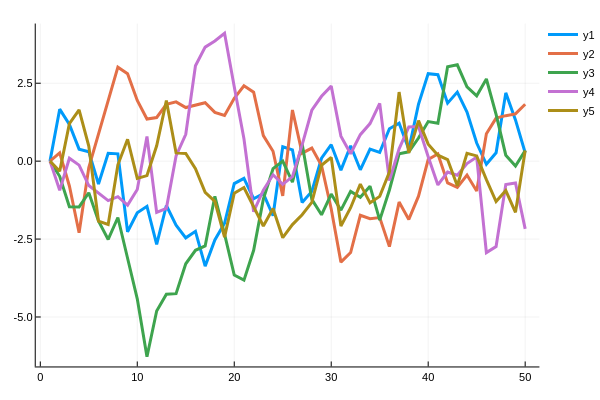
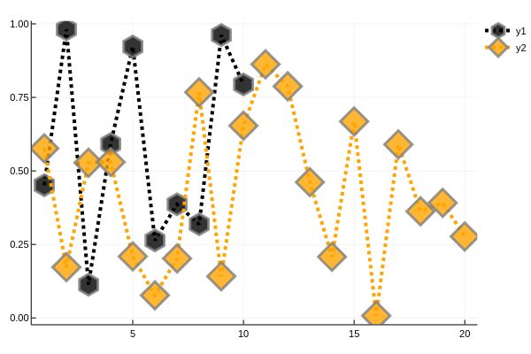
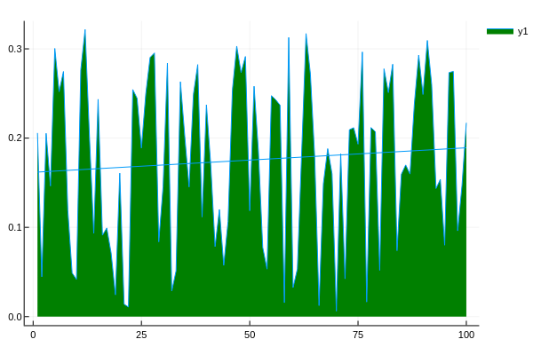
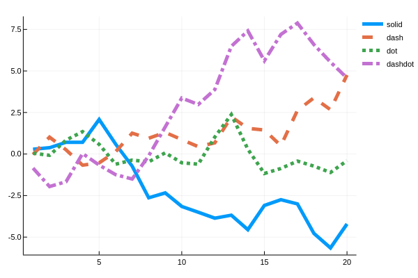
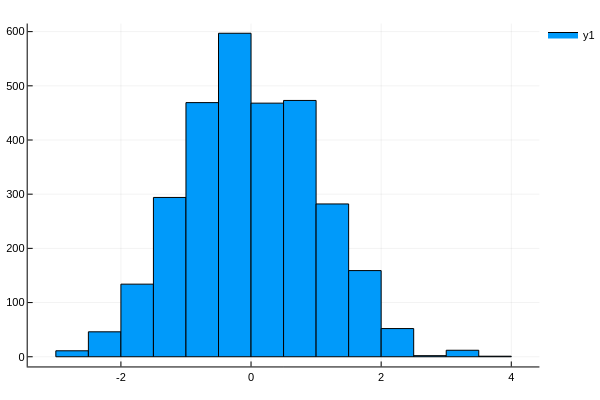
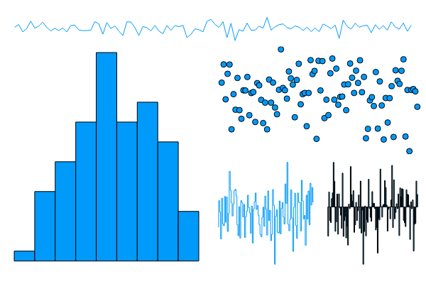
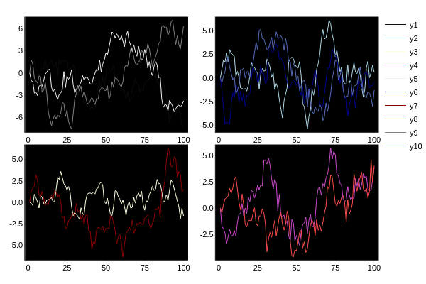
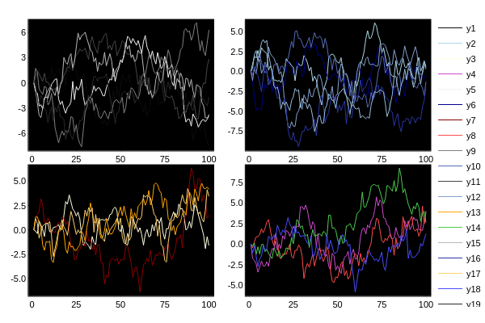
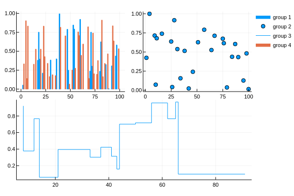

Initialize
using Plots
plotly()Plots.PlotlyBackend()Lines
A simple line plot of the columns.
plot(Plots.fakedata(50, 5), w=3)┌ Info: Error in @async writebody task. Server likely closed the connection unexpectedly. Only an issue if unable to read the response and this error gets re-thrown.
│ exception =
│ IOError: write: connection reset by peer (ECONNRESET)
│ Stacktrace:
│ [1] uv_write(::Sockets.TCPSocket, ::Ptr{UInt8}, ::UInt64) at ./stream.jl:953
│ [2] unsafe_write(::Sockets.TCPSocket, ::Ptr{UInt8}, ::UInt64) at ./stream.jl:1007
│ [3] unsafe_write at /home/travis/.julia/packages/HTTP/nMACo/src/ConnectionPool.jl:174 [inlined]
│ [4] unsafe_write(::HTTP.Streams.Stream{HTTP.Messages.Response,HTTP.ConnectionPool.Transaction{Sockets.TCPSocket}}, ::Ptr{UInt8}, ::UInt64) at /home/travis/.julia/packages/HTTP/nMACo/src/Streams.jl:96
│ [5] unsafe_write at ./io.jl:593 [inlined]
│ [6] macro expansion at ./gcutils.jl:91 [inlined]
│ [7] write at ./io.jl:616 [inlined]
│ [8] writebody(::HTTP.Streams.Stream{HTTP.Messages.Response,HTTP.ConnectionPool.Transaction{Sockets.TCPSocket}}, ::HTTP.Messages.Request, ::String) at /home/travis/.julia/packages/HTTP/nMACo/src/StreamRequest.jl:106
└ [9] (::HTTP.StreamRequest.var"#2#3"{HTTP.ConnectionPool.Transaction{Sockets.TCPSocket},HTTP.Messages.Request,String,HTTP.Streams.Stream{HTTP.Messages.Response,HTTP.ConnectionPool.Transaction{Sockets.TCPSocket}}})() at ./task.jl:333
Parametric plots
Plot function pair (x(u), y(u)).
plot(sin, (x->begin
sin(2x)
end), 0, 2π, line=4, leg=false, fill=(0, :orange))
Colors
Access predefined palettes (or build your own with the colorscheme method). Line/marker colors are auto-generated from the plot's palette, unless overridden. Set the z argument to turn on series gradients.
y = rand(100)
plot(0:10:100, rand(11, 4), lab="lines", w=3, palette=:grays, fill=0, α=0.6)
scatter!(y, zcolor=abs.(y .- 0.5), m=(:heat, 0.8, Plots.stroke(1, :green)), ms=10 * abs.(y .- 0.5) .+ 4, lab="grad")
Global
Change the guides/background/limits/ticks. Convenience args xaxis and yaxis allow you to pass a tuple or value which will be mapped to the relevant args automatically. The xaxis below will be replaced with xlabel and xlims args automatically during the preprocessing step. You can also use shorthand functions: title!, xaxis!, yaxis!, xlabel!, ylabel!, xlims!, ylims!, xticks!, yticks!
using Statistics
y = rand(20, 3)
plot(y, xaxis=("XLABEL", (-5, 30), 0:2:20, :flip), background_color=RGB(0.2, 0.2, 0.2), leg=false)
hline!(mean(y, dims=1) + rand(1, 3), line=(4, :dash, 0.6, [:lightgreen :green :darkgreen]))
vline!([5, 10])
title!("TITLE")
yaxis!("YLABEL", :log10)
Images
Plot an image. y-axis is set to flipped
import FileIO
path = download("http://juliaplots.org/PlotReferenceImages.jl/Plots/pyplot/0.7.0/ref1.png")
img = FileIO.load(path)
plot(img)
Arguments
Plot multiple series with different numbers of points. Mix arguments that apply to all series (marker/markersize) with arguments unique to each series (colors). Special arguments line, marker, and fill will automatically figure out what arguments to set (for example, we are setting the linestyle, linewidth, and color arguments with line.) Note that we pass a matrix of colors, and this applies the colors to each series.
ys = Vector[rand(10), rand(20)]
plot(ys, color=[:black :orange], line=(:dot, 4), marker=([:hex :d], 12, 0.8, Plots.stroke(3, :gray)))
Build plot in pieces
Start with a base plot...
plot(rand(100) / 3, reg=true, fill=(0, :green)) and add to it later.
scatter!(rand(100), markersize=6, c=:orange)
Histogram2D
histogram2d(randn(10000), randn(10000), nbins=20)┌ Warning: Keyword argument match_dimensions not supported with Plots.PlotlyBackend(). Choose from: Set(Symbol[:zforeground_color_guide, :top_margin, :group, :background_color, :yforeground_color_text, :yguidefontcolor, :seriesalpha, :legendfontcolor, :seriescolor, :ztick_direction, :zlims, :normalize, :linestyle, :xflip, :yforeground_color_guide, :fillcolor, :ygrid, :background_color_inside, :bins, :markerstrokestyle, :yscale, :clims, :xtickfontcolor, :xguide, :fillalpha, :tick_direction, :yguidefontsize, :legendfontfamily, :hover, :foreground_color, :x, :legend, :discrete_values, :ytick_direction, :ribbon, :xdiscrete_values, :orientation, :markersize, :camera, :xforeground_color_grid, :quiver, :zticks, :markerstrokecolor, :xtickfontsize, :levels, :foreground_color_border, :marker_z, :markerstrokealpha, :markeralpha, :zguidefontcolor, :ygridlinewidth, :zlink, :zscale, :smooth, :xticks, :zguidefontsize, :y, :margin, :ytickfontcolor, :title_location, :yforeground_color_border, :zguidefontfamily, :zgridalpha, :ztickfontcolor, :html_output_format, :tickfontcolor, :tickfontsize, :z, :yforeground_color_axis, :xerror, :contour_labels, :xguidefontcolor, :primary, :aspect_ratio, :foreground_color_guide, :link, :colorbar_title, :guidefont, :yguide, :yguidefontfamily, :layout, :polar, :right_margin, :xlink, :series_annotations, :inset_subplots, :ytickfontsize, :tickfontfamily, :show_empty_bins, :xrotation, :tickfont, :xgrid, :ygridalpha, :xtick_direction, :colorbar, :zflip, :ticks, :linealpha, :zgrid, :bar_width, :zguide, :zforeground_color_text, :weights, :xgridalpha, :fill_z, :ztickfontfamily, :markershape, :background_color_subplot, :markerstrokewidth, :xguidefontfamily, :gridlinewidth, :foreground_color_subplot, :xgridlinewidth, :foreground_color_text, :titlefonthalign, :yerror, :rotation, :zgridlinewidth, :grid, :xguidefontsize, :xforeground_color_axis, :background_color_outside, :titlefontcolor, :line_z, :size, :projection, :ydiscrete_values, :seriestype, :yflip, :fillrange, :xlims, :xforeground_color_border, :markercolor, :yrotation, :ylink, :yforeground_color_grid, :color_palette, :lims, :xscale, :left_margin, :annotations, :window_title, :zrotation, :foreground_color_axis, :guidefontsize, :foreground_color_title, :bottom_margin, :zdiscrete_values, :framestyle, :scale, :zforeground_color_border, :background_color_legend, :linecolor, :foreground_color_legend, :title, :subplot_index, :flip, :titlefontvalign, :foreground_color_grid, :linewidth, :ztickfontsize, :gridalpha, :guidefontfamily, :ylims, :xtickfontfamily, :ytickfontfamily, :xforeground_color_text, :show, :legendfontsize, :xforeground_color_guide, :legendfont, :subplot, :label, :guide, :guidefontcolor, :titlefontsize, :titlefontfamily, :zforeground_color_axis, :zforeground_color_grid, :colorbar_entry, :yticks])
└ @ Plots ~/.julia/packages/Plots/XpHkc/src/args.jl:1182
Line types
linetypes = [:path :steppre :steppost :sticks :scatter]
n = length(linetypes)
x = Vector[sort(rand(20)) for i = 1:n]
y = rand(20, n)
plot(x, y, line=(linetypes, 3), lab=map(string, linetypes), ms=15)
Line styles
styles = filter((s->begin
s in Plots.supported_styles()
end), [:solid, :dash, :dot, :dashdot, :dashdotdot])
styles = reshape(styles, 1, length(styles))
n = length(styles)
y = cumsum(randn(20, n), dims=1)
plot(y, line=(5, styles), label=map(string, styles), legendtitle="linestyle")
Marker types
markers = filter((m->begin
m in Plots.supported_markers()
end), Plots._shape_keys)
markers = reshape(markers, 1, length(markers))
n = length(markers)
x = (range(0, stop=10, length=n + 2))[2:end - 1]
y = repeat(reshape(reverse(x), 1, :), n, 1)
scatter(x, y, m=(8, :auto), lab=map(string, markers), bg=:linen, xlim=(0, 10), ylim=(0, 10))
Bar
x is the midpoint of the bar. (todo: allow passing of edges instead of midpoints)
bar(randn(99))
Histogram
histogram(randn(1000), bins=:scott, weights=repeat(1:5, outer=200))
Subplots
Use the layout keyword, and optionally the convenient @layout macro to generate arbitrarily complex subplot layouts.
l = @layout([a{0.1h}; b [c; d e]])
plot(randn(100, 5), layout=l, t=[:line :histogram :scatter :steppre :bar], leg=false, ticks=nothing, border=:none)
Adding to subplots
Note here the automatic grid layout, as well as the order in which new series are added to the plots.
plot(Plots.fakedata(100, 10), layout=4, palette=[:grays :blues :heat :lightrainbow], bg_inside=[:orange :pink :darkblue :black])
using Random
Random.seed!(111)
plot!(Plots.fakedata(100, 10))
Open/High/Low/Close
Create an OHLC chart. Pass in a list of (open,high,low,close) tuples as your y argument. This uses recipes to first convert the tuples to OHLC objects, and subsequently create a :path series with the appropriate line segments.
n = 20
hgt = rand(n) .+ 1
bot = randn(n)
openpct = rand(n)
closepct = rand(n)
y = OHLC[(openpct[i] * hgt[i] + bot[i], bot[i] + hgt[i], bot[i], closepct[i] * hgt[i] + bot[i]) for i = 1:n]
ohlc(y)
Annotations
The annotations keyword is used for text annotations in data-coordinates. Pass in a tuple (x,y,text) or a vector of annotations. annotate!(ann) is shorthand for plot!(; annotation=ann). Series annotations are used for annotating individual data points. They require only the annotation... x/y values are computed. A PlotText object can be build with the method text(string, attr...), which wraps font and color attributes.
y = rand(10)
plot(y, annotations=(3, y[3], Plots.text("this is #3", :left)), leg=false)
annotate!([(5, y[5], Plots.text("this is #5", 16, :red, :center)), (10, y[10], Plots.text("this is #10", :right, 20, "courier"))])
scatter!(range(2, stop=8, length=6), rand(6), marker=(50, 0.2, :orange), series_annotations=["series", "annotations", "map", "to", "series", Plots.text("data", :green)])
Contours
Any value for fill works here. We first build a filled contour from a function, then an unfilled contour from a matrix.
x = 1:0.5:20
y = 1:0.5:10
f(x, y) = begin
(3x + y ^ 2) * abs(sin(x) + cos(y))
end
X = repeat(reshape(x, 1, :), length(y), 1)
Y = repeat(y, 1, length(x))
Z = map(f, X, Y)
p1 = contour(x, y, f, fill=true)
p2 = contour(x, y, Z)
plot(p1, p2)
Pie
x = ["Nerds", "Hackers", "Scientists"]
y = [0.4, 0.35, 0.25]
pie(x, y, title="The Julia Community", l=0.5)
Groups and Subplots
group = rand(map((i->begin
"group $(i)"
end), 1:4), 100)
plot(rand(100), layout=@layout([a b; c]), group=group, linetype=[:bar :scatter :steppre], linecolor=:match)
Polar Plots
Θ = range(0, stop=1.5π, length=100)
r = abs.(0.1 * randn(100) + sin.(3Θ))
plot(Θ, r, proj=:polar, m=2)
Heatmap, categorical axes, and aspect_ratio
xs = [string("x", i) for i = 1:10]
ys = [string("y", i) for i = 1:4]
z = float((1:4) * reshape(1:10, 1, :))
heatmap(xs, ys, z, aspect_ratio=1)
Layouts, margins, label rotation, title location
using Plots.PlotMeasures
plot(rand(100, 6), layout=@layout([a b; c]), title=["A" "B" "C"], title_location=:left, left_margin=[20mm 0mm], bottom_margin=10px, xrotation=60)
Spy
For a matrix mat with unique nonzeros spy(mat) returns a colorless plot. If mat has various different nonzero values, a colorbar is added. The colorbar can be disabled with legend = nothing.
using SparseArrays
a = spdiagm(0 => ones(50), 1 => ones(49), -1 => ones(49), 10 => ones(40), -10 => ones(40))
b = spdiagm(0 => 1:50, 1 => 1:49, -1 => 1:49, 10 => 1:40, -10 => 1:40)
plot(spy(a), spy(b), title=["Unique nonzeros" "Different nonzeros"])
Magic grid argument
The grid lines can be modified individually for each axis with the magic grid argument.
x = rand(10)
p1 = plot(x, title="Default looks")
p2 = plot(x, grid=(:y, :olivedrab, :dot, 1, 0.9), title="Modified y grid")
p3 = plot(deepcopy(p2), title="Add x grid")
xgrid!(p3, :on, :cadetblue, 2, :dashdot, 0.4)
plot(p1, p2, p3, layout=(1, 3), label="", fillrange=0, fillalpha=0.3)
Framestyle
The style of the frame/axes of a (sub)plot can be changed with the framestyle attribute. The default framestyle is :axes.
scatter(fill(randn(10), 6), fill(randn(10), 6), framestyle=[:box :semi :origin :zerolines :grid :none], title=[":box" ":semi" ":origin" ":zerolines" ":grid" ":none"], color=permutedims(1:6), layout=6, label="", markerstrokewidth=0, ticks=-2:2)┌ Warning: Framestyle :semi is not supported by Plotly and PlotlyJS. :box was cosen instead.
└ @ Plots ~/.julia/packages/Plots/XpHkc/src/backends/plotly.jl:13
┌ Warning: Framestyle :origin is not supported by Plotly and PlotlyJS. :zerolines was cosen instead.
└ @ Plots ~/.julia/packages/Plots/XpHkc/src/backends/plotly.jl:13
Lines and markers with varying colors
You can use the line_z and marker_z properties to associate a color with each line segment or marker in the plot.
t = range(0, stop=1, length=100)
θ = (6π) .* t
x = t .* cos.(θ)
y = t .* sin.(θ)
p1 = plot(x, y, line_z=t, linewidth=3, legend=false)
p2 = scatter(x, y, marker_z=+, color=:bluesreds, legend=false)
plot(p1, p2)
Portfolio Composition maps
see: http://stackoverflow.com/a/37732384/5075246
using Random
Random.seed!(111)
tickers = ["IBM", "Google", "Apple", "Intel"]
N = 10
D = length(tickers)
weights = rand(N, D)
weights ./= sum(weights, dims=2)
returns = sort!((1:N) + D * randn(N))
portfoliocomposition(weights, returns, labels=permutedims(tickers))
Ribbons
Ribbons can be added to lines via the ribbon keyword; you can pass a tuple of arrays (upper and lower bounds), a single Array (for symmetric ribbons), a Function, or a number.
plot(plot(0:10; ribbon=(LinRange(0, 2, 11), LinRange(0, 1, 11))), plot(0:10; ribbon=0:0.5:5), plot(0:10; ribbon=sqrt), plot(0:10; ribbon=1))
Histogram2D (complex values)
n = 10000
x = exp.(0.1 * randn(n) .+ randn(n) .* im)
histogram2d(x, nbins=(20, 40), show_empty_bins=true, normed=true, aspect_ratio=1)
Unconnected lines using missing or NaN
Missing values and non-finite values, including NaN, are not plotted. Instead, lines are separated into segments at these values.
(x, y) = ([1, 2, 2, 1, 1], [1, 2, 1, 2, 1])
plot(plot([rand(5); NaN; rand(5); NaN; rand(5)]), plot([1, missing, 2, 3], marker=true), plot([x; NaN; x .+ 2], [y; NaN; y .+ 1], arrow=2), plot([1, 2 + 3im, Inf, 4im, 3, -Inf * im, 0, 3 + 3im], marker=true), legend=false)┌ Warning: Keyword argument arrow not supported with Plots.PlotlyBackend(). Choose from: Set(Symbol[:zforeground_color_guide, :top_margin, :group, :background_color, :yforeground_color_text, :yguidefontcolor, :seriesalpha, :legendfontcolor, :seriescolor, :ztick_direction, :zlims, :normalize, :linestyle, :xflip, :yforeground_color_guide, :fillcolor, :ygrid, :background_color_inside, :bins, :markerstrokestyle, :yscale, :clims, :xtickfontcolor, :xguide, :fillalpha, :tick_direction, :yguidefontsize, :legendfontfamily, :hover, :foreground_color, :x, :legend, :discrete_values, :ytick_direction, :ribbon, :xdiscrete_values, :orientation, :markersize, :camera, :xforeground_color_grid, :quiver, :zticks, :markerstrokecolor, :xtickfontsize, :levels, :foreground_color_border, :marker_z, :markerstrokealpha, :markeralpha, :zguidefontcolor, :ygridlinewidth, :zlink, :zscale, :smooth, :xticks, :zguidefontsize, :y, :margin, :ytickfontcolor, :title_location, :yforeground_color_border, :zguidefontfamily, :zgridalpha, :ztickfontcolor, :html_output_format, :tickfontcolor, :tickfontsize, :z, :yforeground_color_axis, :xerror, :contour_labels, :xguidefontcolor, :primary, :aspect_ratio, :foreground_color_guide, :link, :colorbar_title, :guidefont, :yguide, :yguidefontfamily, :layout, :polar, :right_margin, :xlink, :series_annotations, :inset_subplots, :ytickfontsize, :tickfontfamily, :show_empty_bins, :xrotation, :tickfont, :xgrid, :ygridalpha, :xtick_direction, :colorbar, :zflip, :ticks, :linealpha, :zgrid, :bar_width, :zguide, :zforeground_color_text, :weights, :xgridalpha, :fill_z, :ztickfontfamily, :markershape, :background_color_subplot, :markerstrokewidth, :xguidefontfamily, :gridlinewidth, :foreground_color_subplot, :xgridlinewidth, :foreground_color_text, :titlefonthalign, :yerror, :rotation, :zgridlinewidth, :grid, :xguidefontsize, :xforeground_color_axis, :background_color_outside, :titlefontcolor, :line_z, :size, :projection, :ydiscrete_values, :seriestype, :yflip, :fillrange, :xlims, :xforeground_color_border, :markercolor, :yrotation, :ylink, :yforeground_color_grid, :color_palette, :lims, :xscale, :left_margin, :annotations, :window_title, :zrotation, :foreground_color_axis, :guidefontsize, :foreground_color_title, :bottom_margin, :zdiscrete_values, :framestyle, :scale, :zforeground_color_border, :background_color_legend, :linecolor, :foreground_color_legend, :title, :subplot_index, :flip, :titlefontvalign, :foreground_color_grid, :linewidth, :ztickfontsize, :gridalpha, :guidefontfamily, :ylims, :xtickfontfamily, :ytickfontfamily, :xforeground_color_text, :show, :legendfontsize, :xforeground_color_guide, :legendfont, :subplot, :label, :guide, :guidefontcolor, :titlefontsize, :titlefontfamily, :zforeground_color_axis, :zforeground_color_grid, :colorbar_entry, :yticks])
└ @ Plots ~/.julia/packages/Plots/XpHkc/src/args.jl:1182
Lens
A lens lets you easily magnify a region of a plot. x and y coordinates refer to the to be magnified region and the via the inset keyword the subplot index and the bounding box (in relative coordinates) of the inset plot with the magnified plot can be specified. Additional attributes count for the inset plot.
begin
plot([(0, 0), (0, 0.9), (1, 0.9), (2, 1), (3, 0.9), (80, 0)], legend=:outertopright)
plot!([(0, 0), (0, 0.9), (2, 0.9), (3, 1), (4, 0.9), (80, 0)])
plot!([(0, 0), (0, 0.9), (3, 0.9), (4, 1), (5, 0.9), (80, 0)])
plot!([(0, 0), (0, 0.9), (4, 0.9), (5, 1), (6, 0.9), (80, 0)])
lens!([1, 6], [0.9, 1.1], inset=(1, bbox(0.5, 0.0, 0.4, 0.4)))
end
- Supported arguments:
annotations,aspect_ratio,background_color,background_color_inside,background_color_legend,background_color_outside,background_color_subplot,bar_width,bins,bottom_margin,camera,clims,color_palette,colorbar,colorbar_entry,colorbar_title,contour_labels,discrete_values,fill_z,fillalpha,fillcolor,fillrange,flip,foreground_color,foreground_color_axis,foreground_color_border,foreground_color_grid,foreground_color_guide,foreground_color_legend,foreground_color_subplot,foreground_color_text,foreground_color_title,framestyle,grid,gridalpha,gridlinewidth,group,guide,guidefont,guidefontcolor,guidefontfamily,guidefontsize,hover,html_output_format,inset_subplots,label,layout,left_margin,legend,legendfont,legendfontcolor,legendfontfamily,legendfontsize,levels,lims,line_z,linealpha,linecolor,linestyle,linewidth,link,margin,marker_z,markeralpha,markercolor,markershape,markersize,markerstrokealpha,markerstrokecolor,markerstrokestyle,markerstrokewidth,normalize,orientation,polar,primary,projection,quiver,ribbon,right_margin,rotation,scale,series_annotations,seriesalpha,seriescolor,seriestype,show,show_empty_bins,size,smooth,subplot,subplot_index,tick_direction,tickfont,tickfontcolor,tickfontfamily,tickfontsize,ticks,title,title_location,titlefontcolor,titlefontfamily,titlefonthalign,titlefontsize,titlefontvalign,top_margin,weights,window_title,x,xdiscrete_values,xerror,xflip,xforeground_color_axis,xforeground_color_border,xforeground_color_grid,xforeground_color_guide,xforeground_color_text,xgrid,xgridalpha,xgridlinewidth,xguide,xguidefontcolor,xguidefontfamily,xguidefontsize,xlims,xlink,xrotation,xscale,xtick_direction,xtickfontcolor,xtickfontfamily,xtickfontsize,xticks,y,ydiscrete_values,yerror,yflip,yforeground_color_axis,yforeground_color_border,yforeground_color_grid,yforeground_color_guide,yforeground_color_text,ygrid,ygridalpha,ygridlinewidth,yguide,yguidefontcolor,yguidefontfamily,yguidefontsize,ylims,ylink,yrotation,yscale,ytick_direction,ytickfontcolor,ytickfontfamily,ytickfontsize,yticks,z,zdiscrete_values,zflip,zforeground_color_axis,zforeground_color_border,zforeground_color_grid,zforeground_color_guide,zforeground_color_text,zgrid,zgridalpha,zgridlinewidth,zguide,zguidefontcolor,zguidefontfamily,zguidefontsize,zlims,zlink,zrotation,zscale,ztick_direction,ztickfontcolor,ztickfontfamily,ztickfontsize,zticks - Supported values for linetype:
:contour,:heatmap,:path,:path3d,:pie,:scatter,:scatter3d,:scattergl,:shape,:straightline,:surface,:wireframe - Supported values for linestyle:
:auto,:dash,:dashdot,:dot,:solid - Supported values for marker:
:auto,:circle,:cross,:diamond,:dtriangle,:hexagon,:hline,:none,:octagon,:pentagon,:rect,:utriangle,:vline,:xcross
(Automatically generated: 2020-03-18T09:25:37.418)